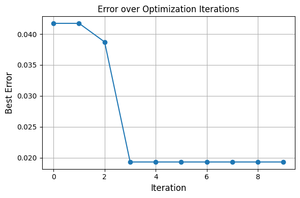
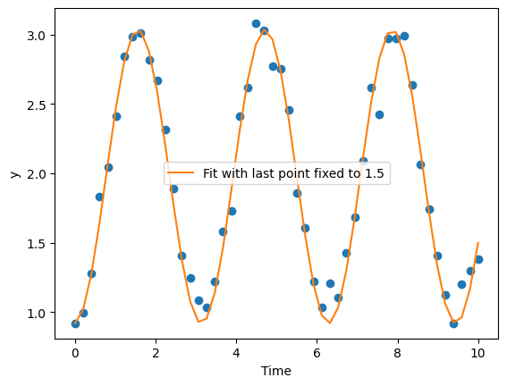

Adding constraints#
We again consider the same problem.
\[\frac{dy}{dt} = A\sin(\omega t + \delta)\]
[1]:
### Dataset
import numpy as np
data = {'Time': np.array([ 0. , 0.20408163, 0.40816327, 0.6122449 , 0.81632653,
1.02040816, 1.2244898 , 1.42857143, 1.63265306, 1.83673469,
2.04081633, 2.24489796, 2.44897959, 2.65306122, 2.85714286,
3.06122449, 3.26530612, 3.46938776, 3.67346939, 3.87755102,
4.08163265, 4.28571429, 4.48979592, 4.69387755, 4.89795918,
5.10204082, 5.30612245, 5.51020408, 5.71428571, 5.91836735,
6.12244898, 6.32653061, 6.53061224, 6.73469388, 6.93877551,
7.14285714, 7.34693878, 7.55102041, 7.75510204, 7.95918367,
8.16326531, 8.36734694, 8.57142857, 8.7755102 , 8.97959184,
9.18367347, 9.3877551 , 9.59183673, 9.79591837, 10. ]), 'y': np.array([0.91963291, 0.99361406, 1.27816619, 1.83477302, 2.0436977 ,
2.4108738 , 2.84511313, 2.98244074, 3.01343352, 2.81703372,
2.66941941, 2.31326251, 1.89208529, 1.40799057, 1.2468084 ,
1.08452949, 1.03682804, 1.22276976, 1.58095538, 1.73274129,
2.41068701, 2.6162268 , 3.08196062, 3.0313903 , 2.77556916,
2.75105715, 2.46021415, 1.85709704, 1.60617448, 1.22300332,
1.03747336, 1.20756063, 1.10867505, 1.42444299, 1.68301796,
2.09068759, 2.61731029, 2.42544506, 2.97204288, 2.97302454,
2.98836389, 2.63614576, 2.06298576, 1.73999305, 1.4090971 ,
1.12819288, 0.92043848, 1.20091581, 1.29993016, 1.38187416])}
General structure#
[2]:
def sine(y, t, A, omega, delta):
dy_dt = A * omega * np.sin(omega * t + delta)
return dy_dt
[3]:
def simulate_model(params):
y0 = params['y0']
A = params['A']
omega = params['omega']
delta = params['delta']
sol = odeint(sine, y0, time, args=(A, omega, delta))
return sol.flatten()
Next, we define an error function, this error function, depends on the data and the model predicted outcomes. The optimizer minimizes this error function
[4]:
import numpy as np
from scipy.integrate import odeint
import matplotlib.pyplot as plt
import os
import sys
import scipy.io
from concurrent.futures import ProcessPoolExecutor
# Get path
# Get path to MCMCwithODEs_primer (3 levels up)
project_root = os.path.abspath(os.path.join(os.getcwd(), '..','..','..'))
sys.path.insert(0, project_root)
import sys
sys.path.append('./..') # or absolute path if needed
from invode import ODEOptimizer, lhs_sample, MSE
Adding constraint#
For an example, let’s say we want the value at t = 10, is fixed to 1.5. We can use a constraints.
[21]:
hyperparam = 0.2
def mse_constrainted(output):
return np.mean((output - data['y'])**2) + hyperparam*np.abs(output[-1]-1.5)
[22]:
param_bounds = {
'y0': 0.91963291, # fixed
'A': (0.2, 1.5),
'delta': (-0.5, 0.5),
'omega': (0.5, 4)
}
time = data['Time']
optimizer_constrained = ODEOptimizer(
ode_func=simulate_model,
error_func=mse_constrainted,
param_bounds=param_bounds,
seed=42,
num_top_candidates=2,
n_samples=300,
num_iter=10,
verbose=False,
verbose_plot=True
)
optimizer_constrained.fit()
Fitting Progress: 100%|█████████████████████████████████████████████████| 10/10 [00:01<00:00, 9.97it/s]
Refining params: {'A': 1.1915368305751737, 'delta': -0.02444698040884663, 'omega': 1.985154886052043}
Refining params: {'A': 0.9695259615925091, 'delta': 0.29615770908917377, 'omega': 1.9648598743384087}

[22]:
({'A': 1.058478997699118,
'delta': 0.035691140341976554,
'omega': 1.9916707918835548,
'y0': 0.91963291},
0.013854377444252103)
[26]:
best_params = optimizer_constrained.best_params
best_fit = simulate_model(best_params)
plt.plot(time,data['y'],'o')
plt.plot(time, best_fit, label='Fit with last point fixed to 1.5')
plt.xlabel("Time")
plt.ylabel("y")
plt.legend()
print(f"The last point is {best_fit[-1]}")
The last point is 1.499999984435069

[ ]: